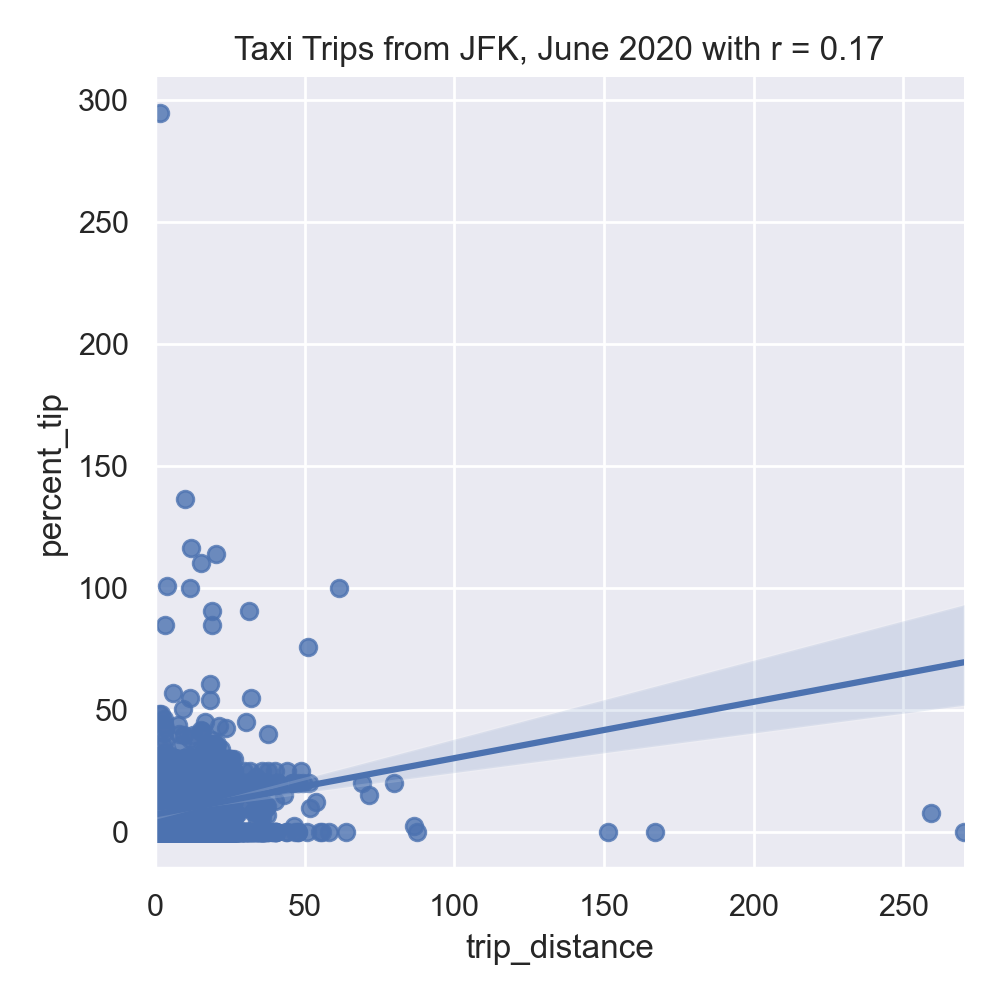
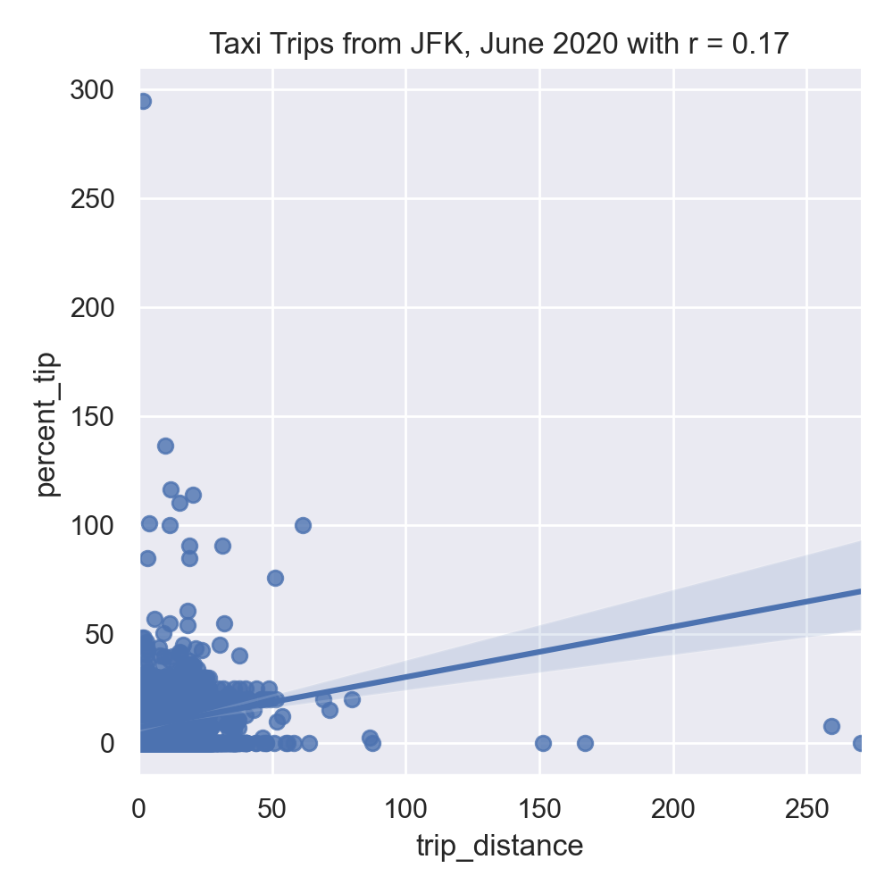

Program 8: Yellow Taxi Data
CSci 39542: Introduction to Data Science
Department of Computer Science
Hunter College, City University of New York
Spring 2022
Classwork Quizzes Homework Project
Program Description
Program 8: Yellow Taxi Data. Due noon, Thursday, 31 March.
This program as well as the following program, Program 9, are tailored to the NYC OpenData Yellow Taxi Trip Data and follow a
standard strategy for data cleaning and model building of:
Learning Objective: give students practice on implementing model from start to finish and to strengthen understanding of model drift.
Available Libraries: pandas, datetime, sklearn, and core Python 3.6+.
Data Sources: Yellow Taxi Trip Data from OpenData NYC.
Sample Datasets: taxi_new_years_day_2020.csv,
taxi_4July2020.csv, and
taxi_jfk_june2020.csv.

This program will focus on building a linear regression model on the numerical features of our dataset to predict tip percentages. In Program 9, we also encode and impute categorical data features to build a model to predict which taxi trips paid tolls.
The function specifications are:
-
import_data(file_name) -> pd.DataFrame:This function takes as one input parameter:-
file_name: the name of a CSV file containing Yellow Taxi Trip Data from OpenData NYC.
total_amountare dropped. The resulting DataFrame is returned. -
-
add_tip_time_features(df) -> pd.DataFrame:This function takes one input:-
df: a DataFrame containing Yellow Taxi Trip Data from OpenData NYC.
percent_tip: which is100*tip_amount/(total_amount-tip_amount)duration: the time the trip took in seconds.dayofweek: the day of the week that the trip started, represented as 0 for Monday, 1 for Tuesday, ... 6 for Sunday.
-
-
impute_numeric_cols(df, x_num_cols) -> pd.DataFrame:This function takes two inputs:-
df: a DataFrame containing Yellow Taxi Trip Data from OpenData NYC. -
x_num_cols: a list of numerical columns indf.
x_num_colsare replaced with the median of the column. Returns a DataFrame containing only the imputed numerical columns from inputdf. -
-
transform_numeric_cols(df_num, degree_num=2) -> np.ndarray:This function takes two inputs:-
df_num: a DataFrame of numeric columns with no null values. -
degree_num: the degree used for the polynomial encoding.
sklearn.preprocessing.PolynomialFeaturesis instantiated with inputsdegree=degree_num. The model is than fitted (usingfit_transform) to the numeric columns,df_num_imputed, and the resulting array is returned. (See Chapter 20.2.2 for an example). -
-
fit_linear_regression(x_train, y_train)This function takes two inputs:-
x_train: an array of numeric columns with no null values. -
y_train: an array of numeric columns with no null values.
x_trainandy_trainand returns the intercept, model coefficients, and model object. -
-
predict_using_trained_model(mod, x, y):This function takes three inputs:-
mod: a trained model for the data. -
x: an array or DataFrame of numeric columns with no null values. -
y: an array or DataFrame of numeric columns with no null values.
modonx) and the actual values (y). Note thatsklearn.metricscontains two functions that may be of use:mean_squared_errorandr2_score. -
For example, the file, taxi_jfk_june2020.csv, contains all taxi trips, starting from JFK in June 2020 Yellow Taxi Trip Data (about 9,500 entries) with the first lines are:
VendorID,tpep_pickup_datetime,tpep_dropoff_datetime,passenger_count,trip_distance,RatecodeID,store_and_fwd_flag,PULocationID,DOLocationID,payment_type,fare_amount,extra,mta_tax,tip_amount,tolls_amount,improvement_surcharge,total_amount,congestion_surcharge
2,06/01/2020 12:00:31 AM,06/01/2020 12:31:43 AM,1,12.59,1,N,132,189,2,37,0.5,0.5,0,0,0.3,38.3,0
2,06/01/2020 12:05:23 AM,06/01/2020 12:29:05 AM,1,15.8,1,N,132,255,1,42,0.5,0.5,8.66,0,0.3,51.96,0
2,06/01/2020 12:06:27 AM,06/01/2020 12:36:26 AM,1,18.19,2,N,132,142,1,52,0,0.5,10,0,0.3,65.3,2.5
2,06/01/2020 12:08:48 AM,06/01/2020 12:40:48 AM,2,19,2,N,132,113,1,52,0,0.5,13.82,0,0.3,69.12,2.5
2,06/01/2020 12:13:46 AM,06/01/2020 12:25:29 AM,1,7.21,1,N,132,134,2,21,0.5,0.5,0,0,0.3,22.3,0df = import_data('taxi_jfk_june2020.csv')
df = add_tip_time_features(df)
print(df[ ['trip_distance','duration','dayofweek','total_amount','percent_tip'] ].head() ) trip_distance duration dayofweek total_amount percent_tip
0 12.59 1872.0 0 38.30 0.000000
1 15.80 1422.0 0 51.96 20.000000
2 18.19 1799.0 0 65.30 18.083183
3 19.00 1920.0 0 69.12 24.990958
4 7.21 703.0 0 22.30 0.000000We can impute the missing data in numerical columns with their median value. For example:
print(df[ ['passenger_count','trip_distance'] ])
df['passenger_count'] = impute_numeric_cols(df,['passenger_count'])
print( df[ ['passenger_count','trip_distance'] ].head() )passenger_count the results of impute_numeric_cols:
passenger_count trip_distance
0 1.0 12.59
1 1.0 15.80
2 1.0 18.19
3 2.0 19.00
4 1.0 7.21
5 1.0 6.50
6 2.0 13.90
7 NaN 0.00
8 NaN 0.00
9 NaN 0.00
passenger_count trip_distance
0 1.0 12.59
1 1.0 15.80
2 1.0 18.19
3 2.0 19.00
4 1.0 7.21
5 1.0 6.50
6 2.0 13.90
7 1.0 0.00
8 1.0 0.00
9 1.0 0.00The running example in the textbook focuses on predicting restaurant tips. A highly correlated feature with tips for restaurant meals is the total bill. Let's look at the taxi data set to see if a similar correlation is suggested for tips on yellow taxi trips:
#Explore some data:
import matplotlib.pyplot as plt
import seaborn as sns
sns.set_theme(color_codes=True)
sns.lmplot(x="total_amount", y="percent_tip", data=df)
tot_r = df['total_amount'].corr(df['percent_tip'])
plt.title(f'Taxi Trips from JFK, June 2020 with r = {tot_r:.2f}')
plt.tight_layout() #for nicer margins
plt.show()
sns.lmplot(x="trip_distance", y="percent_tip", data=df)
dist_r = df['trip_distance'].corr(df['percent_tip'])
plt.title(f'Taxi Trips from JFK, June 2020 with r = {dist_r:.2f}')
plt.tight_layout() #for nicer margins
plt.show()The resulting images:
 

Neither total amount or distance of the trip are strongly correlated, suggesting a linear regression model with a single input will not make a good predictor. Let's build a more complicated model that uses multiple inputs, including the numerical columns:
num_cols = ['passenger_count','trip_distance','RatecodeID','PULocationID','DOLocationID','payment_type','fare_amount','extra','mta_tax','tip_amount','tolls_amount','improvement_surcharge','total_amount','congestion_surcharge','duration','dayofweek']
df_imputed = impute_numeric_cols(df,num_cols)
df_x = df_imputed
y = df['percent_tip']With the missing numeric data imputed, we can fit the model on training sets (of size 25%):
from sklearn.model_selection import train_test_split
print('For numeric columns, training on 25% of data:')
x_train,x_test,y_train,y_test = train_test_split(df_x,y)
intercept, coeffs, mod = fit_linear_regression(x_train,y_train)
print(f'intercept = {intercept} and coefficients = {coeffs}')
tr_err,tr_r2 = predict_using_trained_model(mod, x_train,y_train)
print(f'training: RMSE = {tr_err} and r2 = {tr_r2}.')
test_err,test_r2 = predict_using_trained_model(mod, x_test,y_test)
print(f'testing: RMSE = {test_err} and r2 = {test_r2}.')the resulting model does a reasonable both with the training and testing data sets that we used to validate the model:
For numeric columns, training on 25% of data:
intercept = 34.128603724366776 and coefficients = [-4.51251635e-02 1.42762012e-01 -2.13115277e-01 5.25968158e-15
-2.55903361e-03 -6.90080569e+00 4.14314789e-02 1.10260155e-02
-3.02379090e+00 1.29921229e+00 1.10123016e-01 -4.40906348e+01
-1.81824685e-01 5.12722540e-02 -3.16853791e-05 1.08447199e-02]
training: RMSE = 34.01017686662997 and r2 = 0.7350167925786109.
testing: RMSE = 23.9974484390634 and r2 = 0.798760914470428.
We can use the model for other yellow taxi data sets to see how well our model does:
print(f'Prediction for 4 July data:')
df_july = pd.read_csv('taxi_4July2020.csv').head()
df_july = add_tip_time_features(df_july)
df_j_imp = impute_numeric_cols(df_july,num_cols)
df_x = df_imputed
y = df_july['percent_tip']
df_july_imp = impute_numeric_cols(df_july,num_cols)
july_err,july_r2 = predict_using_trained_model(mod, df_july_imp,df_july['percent_tip'])
print(f'training: RMSE = {tr_err} and r2 = {tr_r2}.')The root mean squared error is higher, but still a reasonable fit:
Prediction for 4 July data:
training: RMSE = 34.01017686662997 and r2 = 0.7350167925786109.
Do we need 25% of the data for training? Let's try with just 10% of the data and see how well the model does on the training and testing data:
print('For numeric columns, training on 10% of data:')
df_x = df_imputed
y = df['percent_tip']
x_train,x_test,y_train,y_test = train_test_split(df_x,y,test_size=0.1,random_state=17)
intercept, coeffs, mod = fit_linear_regression(x_train,y_train)
print(f'intercept = {intercept} and coefficients = {coeffs}')
tr_err,tr_r2 = predict_using_trained_model(mod, x_train,y_train)
print(f'training: RMSE = {tr_err} and r2 = {tr_r2}.')
test_err,test_r2 = predict_using_trained_model(mod, x_test,y_test)
print(f'testing: RMSE = {test_err} and r2 = {test_r2}.')For numeric columns, training on 10% of data:
intercept = 31.93944365469102 and coefficients = [-6.96532365e-02 1.53416173e-01 -1.75092738e-01 4.35768088e-12
-2.11111185e-03 -6.89816662e+00 -2.41541506e-02 3.72953218e-02
-3.24270162e+00 1.26217702e+00 2.79494331e-02 -3.67595994e+01
-1.22350450e-01 -9.82610653e-02 -2.68681888e-05 1.17100065e-02]
training: RMSE = 31.839870447532608 and r2 = 0.7460779638992571.
testing: RMSE = 27.58958147548388 and r2 = 0.7913497106610776.
Lastly, we can use quadratic features to build a model:
print('For transformed columns, training on 25% of data:')
df_transformed = transform_numeric_cols(df_imputed)
df_x = df_transformed
x_train,x_test,y_train,y_test = train_test_split(df_x,y)
int_poly, co_poly, mod_poly = fit_linear_regression(x_train,y_train)
print(f'intercept = {int_poly} and coefficients = {co_poly}')
tr_err,tr_r2 = predict_using_trained_model(mod_poly, x_train,y_train)
print(f'training: RMSE = {tr_err} and r2 = {tr_r2}.')
test_err,test_r2 = predict_using_trained_model(mod_poly, x_test,y_test)
print(f'testing: RMSE = {test_err} and r2 = {test_r2}.')
the resulting model produces the following parameters and does very well with the training data, but not as well on validation:
testing: RMSE = 27.58958147548388 and r2 = 0.7913497106610776.
For transformed columns, training on 25% of data:
intercept = 98.72874163717195 and coefficients = [ 2.10419587e-05 -7.33813212e-05 3.36448376e-05 -1.14982704e-03
3.21888112e-07 -1.44329284e-05 -8.69336745e-04 1.66712369e-04
2.81695737e-04 -1.08879523e-03 3.41908316e-04 2.12645367e-04
-1.14415611e-02 -1.90864671e-04 -3.59725562e-05 -1.35384327e-07
3.16192056e-05 -9.70729528e-03 4.68643310e-02 6.01985117e-03
-3.18255958e-03 1.30289584e-04 -2.68086479e-01 -3.84924504e-02
-1.65688146e-02 1.50481295e+00 -5.70407301e-02 -2.27108373e-02
2.44141763e-02 2.50939438e-02 -1.76656859e-02 2.59647998e-05
-8.80232044e-04 -1.68208742e-03 4.63169427e-02 4.20433722e-03
1.43176776e-04 1.06253564e-01 -6.34687088e-03 -5.11306022e-03
-4.48735254e-01 -1.76742277e-02 -2.67139991e-02 -1.77037894e+00
4.89418246e-03 6.67734938e-02 2.61976357e-05 5.54436646e-03
1.98243118e-01 -1.51783343e-01 1.30845509e-03 -3.03937419e-01
-2.56107583e-01 6.41789127e-03 2.86357901e-01 -3.85596590e-01
-3.39876707e-01 5.92648639e+01 2.73192850e-01 -2.66978945e-01
-8.89359192e-05 -6.07624881e-02 2.58565114e-11 -1.84421817e-03
-1.14789591e-01 2.19810468e-02 3.71806539e-02 -1.43718154e-01
4.51344132e-02 2.80868768e-02 -1.51028036e+00 -2.52000297e-02
-4.74896197e-03 -6.65332251e-06 4.16021836e-03 6.31572545e-08
2.15564627e-03 2.64693081e-04 2.21420140e-05 3.08987702e-02
6.24975144e-04 2.75875164e-04 7.32510247e-01 -1.97699408e-04
-9.16773789e-04 -1.59614030e-06 -2.89070057e-04 1.24237417e+00
-1.54267635e-01 -2.27724946e-01 5.13635975e+00 3.41927378e-04
-3.14913649e-01 -2.31439213e-02 3.06565666e-01 -6.16213488e-01
-1.47606798e-04 -8.65390190e-02 3.68778339e-02 1.26272255e-01
4.81095283e-01 1.45582565e-01 1.27227451e-01 -7.45844272e-02
-1.05134981e-01 -4.77707890e-01 1.19878534e-04 -1.60477785e-02
8.79743756e-02 -3.46596353e+00 1.55694466e-01 1.62418563e-01
-2.61367204e-01 -1.59647359e-01 -3.77665930e-01 1.09330543e-04
1.09208554e-02 -5.44386948e-04 6.14354603e-01 4.03678198e-01
-2.39788549e-02 -3.80000807e-01 1.60567166e+00 5.47130715e-05
-7.00781561e-01 1.16678588e-01 1.72987001e-01 1.02578238e-04
-1.81873085e-01 -5.69410563e-01 6.15174164e-05 -5.18682465e-02
8.35896110e-02 6.38338090e-05 -1.52328411e-01 -4.96025702e-01
1.11070132e-04 -3.21976800e-02 -3.43245537e-03 -3.59795585e-01
-1.07930916e-05 4.00086335e-03 -4.81844771e-01 6.89662685e-02
4.69985663e-01 -1.22753069e-04 1.91297859e-02 -8.99424477e-05
2.04662228e-04 6.33667804e-02 5.53689326e-09 1.30022472e-05
5.53118040e-03]
training: RMSE = 13.088491006521934 and r2 = 0.8967712162338656.
testing: RMSE = 84.80328619938028 and r2 = 0.31582057991135126.